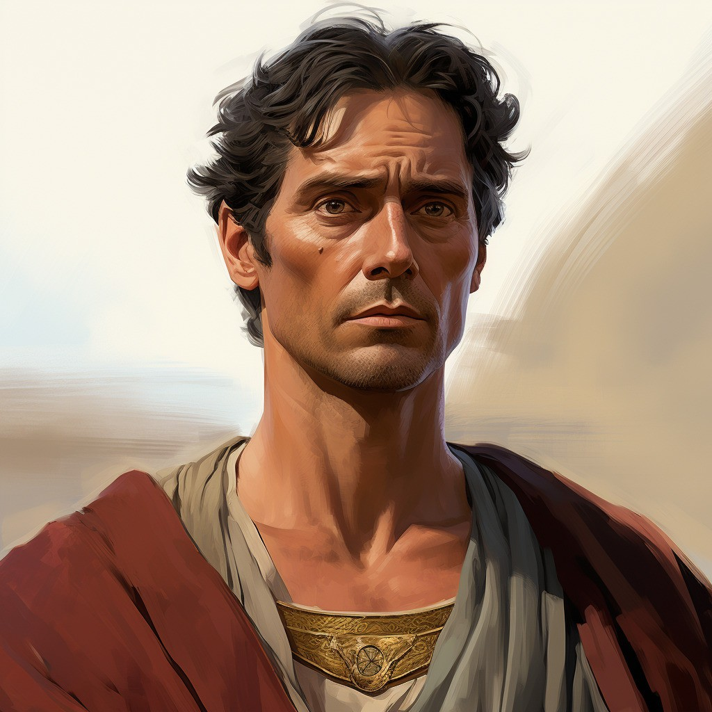
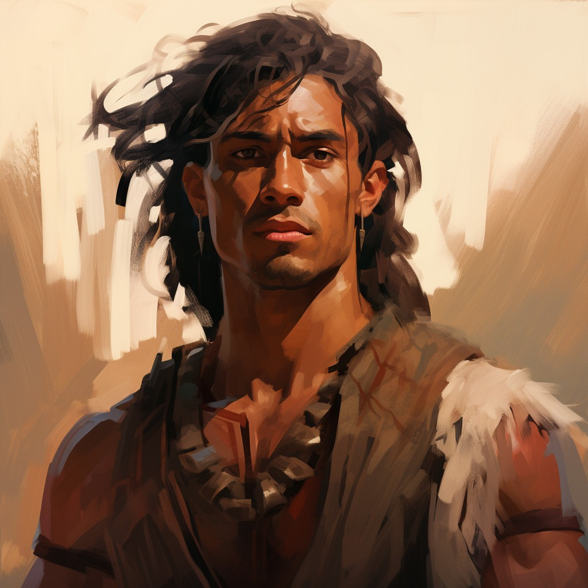
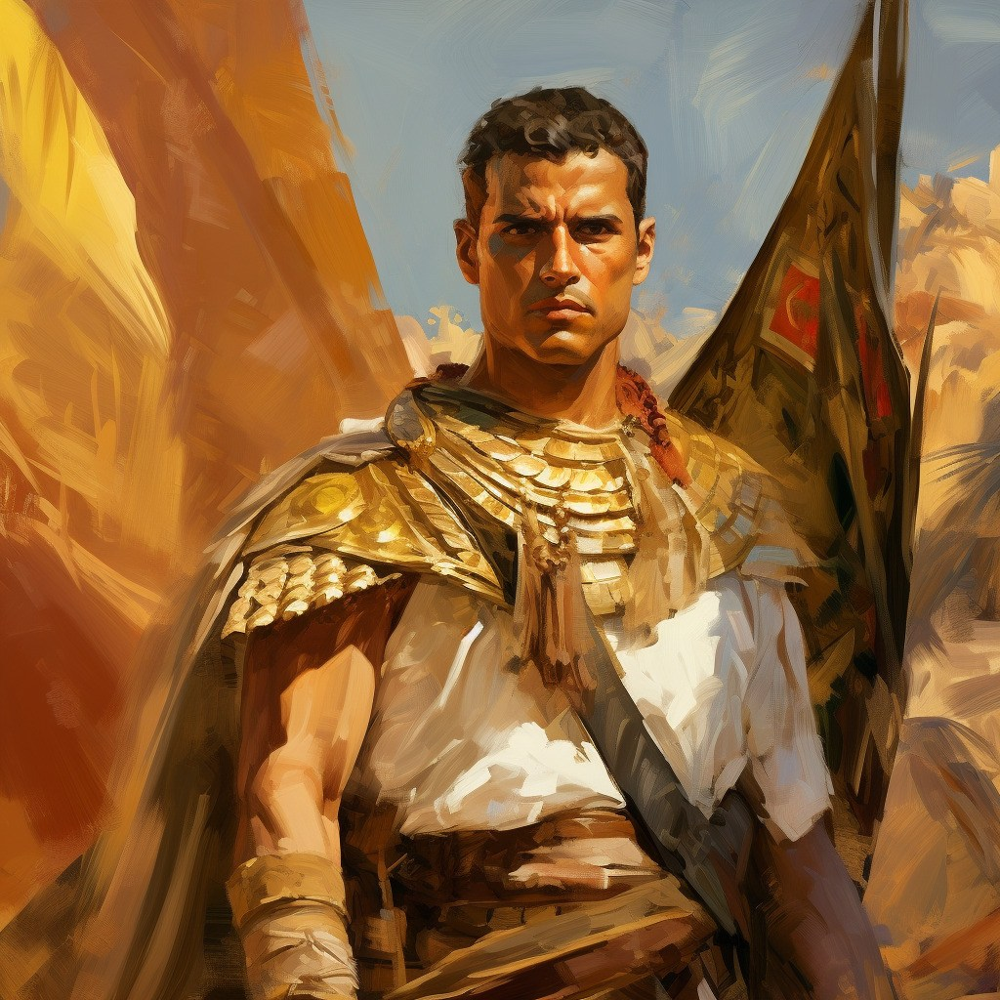
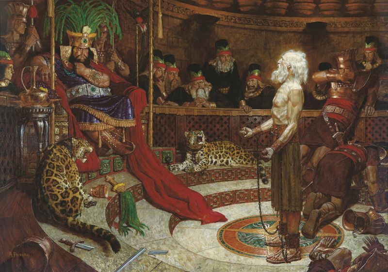
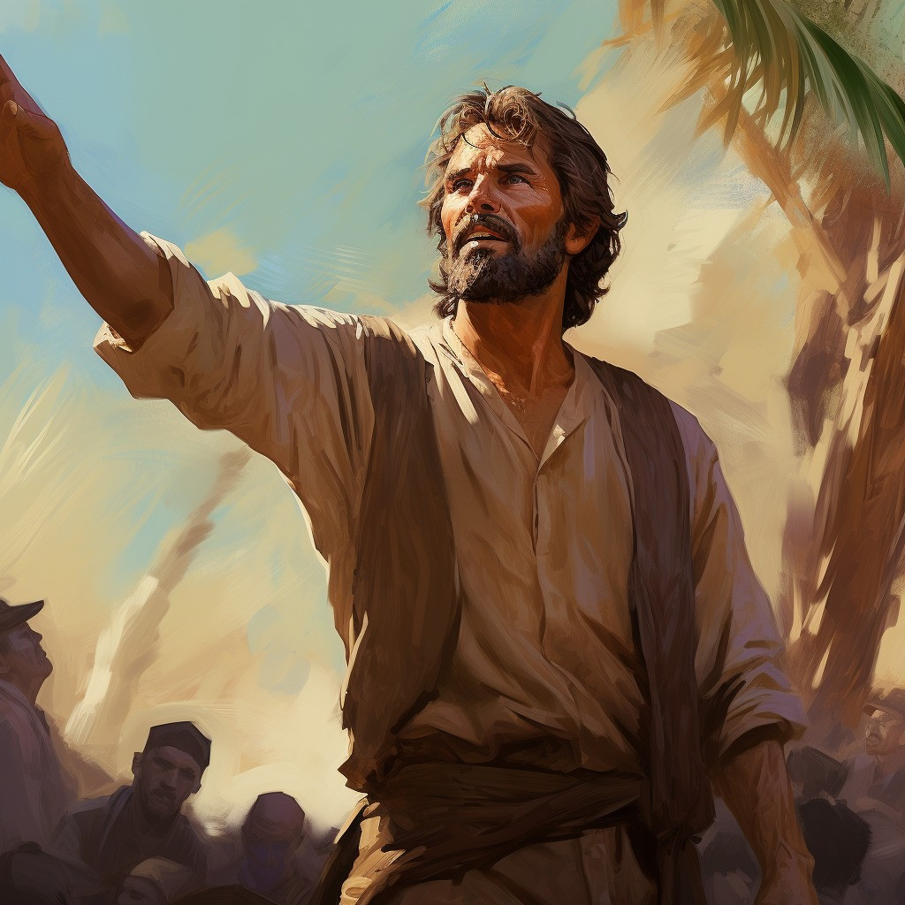
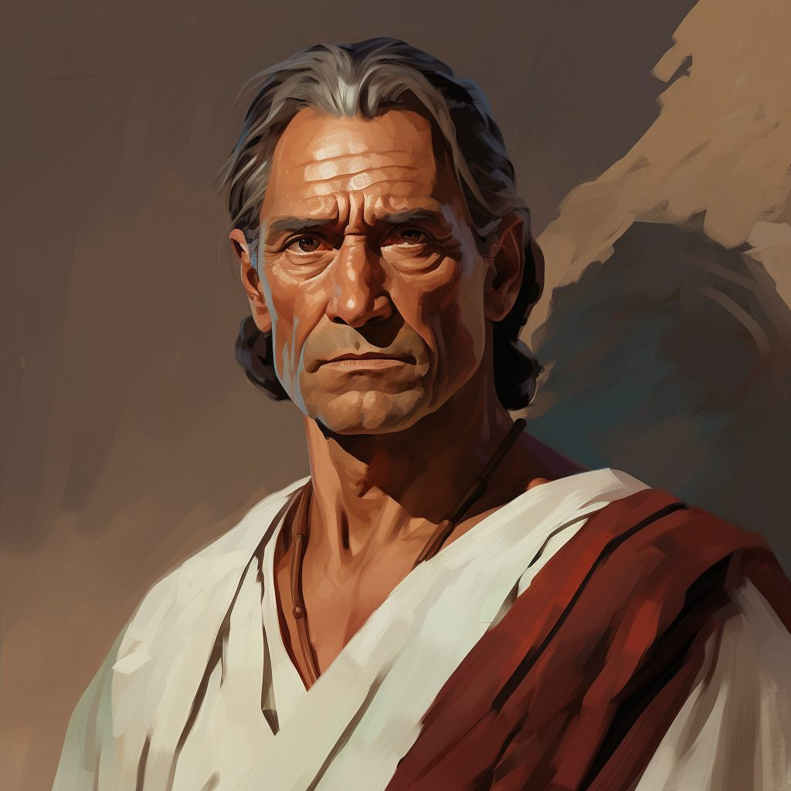

Lachoneus
Lachoneus was chief judge and governor over the Nephite land at the time of the birth of Christ, in the ninety-first year of the judges, six hundred years after Lehi left Jerusalem In the sixteenth year after the coming of Christ (about AD 16), Lachoneus received an epistle from Giddianhi, leader of the Gadianton robbers, demanding that the Nephites yield up their cities, lands, and possessions and unite with the robbers or be destroyed (3 Nephi 3:1-10). Lachoneus was not frightened by the threats; rather than answer the demand, he had his people cry to the Lord for strength (3 Nephi 3:12).

Teancum
Teancum was a Nephite military commander under Moroni during the wars against the Lamanites and Nephite dissenters. Around 67 BC he led the army Moroni sent against the rebel Morianton, defeated his force, took the survivors prisoner, and killed Morianton himself (Alma 50:35). When the dissenter Amalickiah, then king of the Lamanites, marched to seize the land Bountiful and the land northward, Teancum and his men repulsed him and drove the Lamanites back to the seashore (Alma 51:29-32). That night Teancum and a servant stole into the camp, and Teancum entered the king’s tent and drove a javelin into Amalickiah’s heart, killing him without waking his guards (Alma 51:33-34). The next morning the Lamanites found Amalickiah dead, abandoned their plan to march into the land northward, and retreated into the city of Mulek; Amalickiah’s brother Ammoron was made king in his place (Alma 52:1-3).

Captain Moroni
Moroni was appointed chief captain over all the Nephite armies at the age of twenty-five, around 74 BC, taking command of their wars during a period of conflict with the Lamanites and of internal division at home (Alma 43:16-17). As a commander he armed his soldiers with breastplates, arm-shields, head-shields, and thick clothing, so that Zerahemnah’s larger but unarmored army was afraid to face them (Alma 43:19-21). At the city of Mulek he held a council of war and, unable to draw the Lamanites onto open ground, used Teancum to decoy them out while he took the city from the rear and trapped their force between his men and Lehi’s (Alma 52:19–40).

Abinadi
Abinadi was a Nephite prophet active around 150 BC who preached repentance to the people of King Noah. He was the first recorded Nephite executed for his testimony, burned to death after refusing to recall his words (Mosiah 17:20). After an earlier preaching had nearly cost him his life, Abinadi returned two years later, this time in disguise, warning that unless the people repented they would be brought into bondage and Noah’s life valued “even as a garment in a hot furnace” (Mosiah 12:1-8).

Amulek
Amulek was a Nephite of the city of Ammonihah and the missionary companion of Alma. He identified himself as the son of Giddonah, son of Ishmael, a descendant of Aminadi — the Aminadi who interpreted the writing on the wall of the temple — and through Aminadi a descendant of Nephi, Lehi, and Manasseh (Alma 10:2-3). He described himself as a man of reputation with many kindred and friends, who had acquired much wealth by his own industry (Alma 10:4).

Mormon
Mormon was a Nephite prophet, military commander, and record keeper, born around AD 310. He was named after his father, Mormon, and after the land of Mormon, where Alma established the first church after fleeing King Noah (3 Nephi 5:12; Mosiah 18). He identified himself as a pure descendant of Lehi (3 Nephi 5:20). About the time Ammaron hid up the Nephite records, he came to Mormon, then about ten years old, telling him he was “a sober child, and quick to observe” (Mormon 1:2).